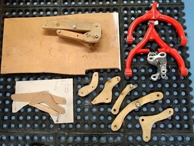

The history behind it
The chassis to some is a work of art, but to me it is a not as good as I want it to be and a bit of an amateur job. It cost around £400 in a high carbon content tube (T45) which is big money for tube. It is a specialist material these days. T45 is great for brazing as the heat doesn't introduce localised stress like a tig weld and doesn't require post weld heat treatment of normalising. The brazing took months and all the machined bearing points seemingly took weeks of precision tuning as they were pressed into T45 brazed lugs which needed a fine clearance to minimise axial play. I have a great appreciation for the engineers who over the years have concocted almost beautiful alloys, for each and every application requiring a slightly different specification. I've spent a lot of time hand machining a wide range of alloys to which there are many more and have learned to see and feel the qualities as you cut them. I have caught out a few cheeky cheap suppliers this way who sent out more common stuff masking it as a more exotic spec.
Trueing the mounting points on the Bridgeport
The winter months
Every winter has brought reams of expectations of improvement for the following year and 2017 was a huge advance on 16 where anything over 140mph with the incorrect placement of the centre of pressure put straight line stability on par with a kids tricycle on rocket fuel. Just one lap left you exhausted just keeping it on the road; the turbulence at high speeds made the bike dance through pockets of pressure violently shifting it left and right as if you are in a hurricane. On top of that the steering was not robust enough for the huge forces of a road race circuit. A new set of fairings the following winter took 3 months of plastercene carving and many evenings sat staring; picturing how the air would flow through and around the bike.The steering has always been the achilles heal of the bike; something still under development. The high opposing gyroscopic forces resulted in excessive free play at the bars when tackling those heavy changes in direction over bumps. This was due to the designs incorporating multiple bearings in the linkage mechanism; the cumulative clearance necessary for it to function as a linkage in all of these bearings adds up to an unacceptable level when you rapidly change direction.
2018 will see a completely new design without linkages. Switching to a linear motion with axial and radial loads to manage. The new design will lend itself to an exciting extension of versatility. All motorcycles are stuck with a ratio of 1:1 due to the inherent direct connection through forks. I am looking to develop an adjustable ratio system incorporated within a damping unit.
Linear rising rate suspension

The double wishbone design might seem familiar to a lot of enthusiasts from first glance; it is not novel by appearance but only in it’s true geometry does it differ from any other. I did not compare or measure any other system to produce mine. The lever ratio, wishbone lengths or positions, wheel rate, rake and trial are all just positions I chose purely based on what I thought would be right. Many paper, cardboard and wooden models helped. I checked the numbers after I rode it for a year to see how it compared to others and found some interesting differences. There is good ground for improvement at least. The key was I didn’t want to be steered in a direction based on what others had produced. I needed a fresh slate.
Examples of some of the prototype linkages and wishbones
It is worthy to mention the multiple designs of rising rate I went through to get where I am now. The image on the right illustrates just some of the prototype components for the front suspension geometry. The problem was to eradicate any progressive motion to the damper and acheive a truely linear rate of rise. I described my first suspension design to the guy who was responsible for the suspension development on the Elf bike back in the 80's. On reflection I was just looking for a sympathetic shoulder to cry on; like most DIY constructors, metal is money and much time and effort goes into every design of component. To use a set of beautifully machinined linkages just once and condem them scrap is hard to do. What I was searching for was false hope and that he would tell me if I sprinkled fairy dust on them they would do what I wanted. What I needed to do was man up and start again. So I did; but this time get it right on cardboard, then wood, then metal. To work in the space I had I needed to get creative with the linkage mechanism. It took 3 months to come up with the perfect design by trial and error with cardboard cut outs. The transformation was remarkable. I used to setup and revalve conventional suspension systems as a business. You know when you have acheived a good setup when bumps you know are there; simply don't exist anymore.

The 2017 setup; 100% linear rising rate
Developments
Overtime I plan to make a 5083 chassis, primarily because it does not require heat treatment post welding but also to enable a more complex chassis structure. It is difficult to triangulate back from the front pivot points with tube given the space constraints of an airbox and tank in the way. My tubular chassis is fine for simple track racing but road racing flares it's weaknesses like a hollow point. The brazing was done with sifbronze no1 1.6mm rods and I am ashamed to say I filed all the welds back to a smooth finish! Mainly due to brazing it with a very harsh tip which does not keep a small focal point and didn’t give me the control to put a pretty fillet into the joint. Instead I got a great capillary action over a broader area. It was not intentional, just part of the learning experience. By filing the fillets I’ve thinned out the strength of the joint but not so much I lost sleep over it. I think the thickness of the fillets is more of a concern for it’s ability to withstand a crash or over travel on poorly setup shock absorbers that go solid. I am already looking beyond this fairly conventional structure I have created and trying to maintain focus on the principal purpose of what the bike needs to do in order to create something that goes beyond current chassis design.The Verdict
It’s braking ability is fantastic, although probably only to me as it removes feel and gives a false level of comfort. Once I start pushing as hard as I need to be at the pointy end (which it isn’t ready for yet) I would likely to be losing the front trying to overtake people without warning. Conventional forks let you know what’s going on and limit the result somewhat. My design technically allows higher braking forces to be applied given the same conditions and contact patch but that limit can only be found with a blessing from the almighty or a frequent flyer permit on that chopper again. The load transfer under heavy braking is dissipated through the frame; very different to conventional forks where it ends up cumulating at the tyre and squishing that contact patch to a non-uniform splat which is hard to turn out of. Along with the massive shift in sprung weight and it’s catastrophic effects on geometry.Why only me? Because I trust it more than anyone else who dare straddle it. Brazing is tricky but very DIY achievable. Cleanliness and patience are key and not too much heat as I was slow to find. Lots of people seem to see brazing as a black art, I put it with growing a bonsai; easy with patience, a bit like fusion welding titanium; that’s no different than baking a cake. A lot harder to design a structure to accommodate all the loads than to stick it all together. An interesting food for thought is the potential advantages for dynamic lateral and torsional stiffness; could a frame that gets progressively stiffer with speed offer benefits? I have found my chassis to feel fantastic on an opening lap with a huge smile on my face which soon gets wiped off as I wind it up on the following laps. Perhaps a pressurised sealed chassis structure with a small sealed circuit; exhausting and re-filling offering small internal dynamic support for flex? It would sure put my welds to the test!